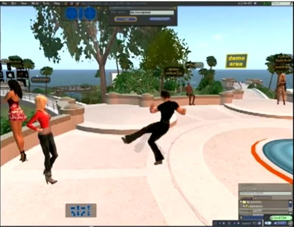

Export to Second Life

Linden Labs spawned a whole new genre of virtual reality when they launched Second Life. Now you can download the OpenSim project and run your own server for free!
As far as we know, BVH is still the main way to import animation into the Second Life universe.